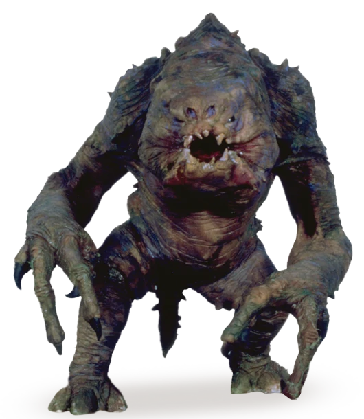
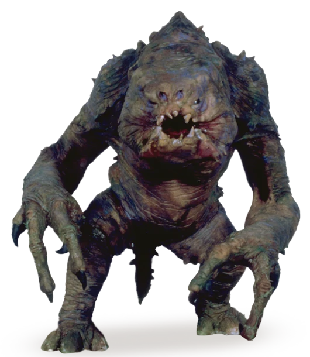

Датомир
Описание
Датомир (англ. Dathomir ), также известный как " планета ранкоров " (англ. Rancor planet ) - удалённая нейтральная планета в одноименной системе сектора Квелли Внешнего Кольца галактики. На планете обитал ковен датомирских ведьм Сестёр ночи. Освещённый кроваво-красным светом своей центральной звезды и окутанный вечным туманом, Датомир снискал дурную славу среди жителей галактики. На планете находилось несколько материков, покрытых причудливыми растениями, лесами и топями. Датомир был пронизан тёмной стороной, сильно влиявшей на обитателей планеты, особенно на чувствительных к Силе. Из недр планеты исходил люминесцентный зелёный туман, даровавший ведьмам уникальную разновидность использования Силы - магию.
Обитатели
 
